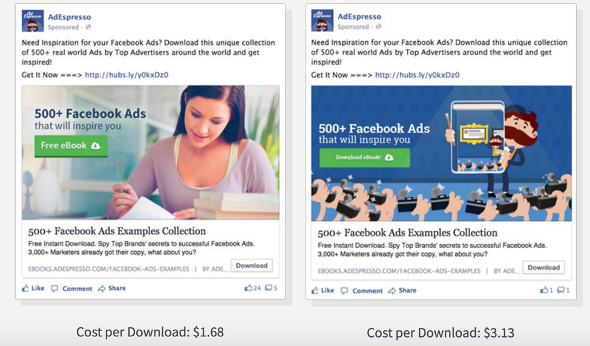
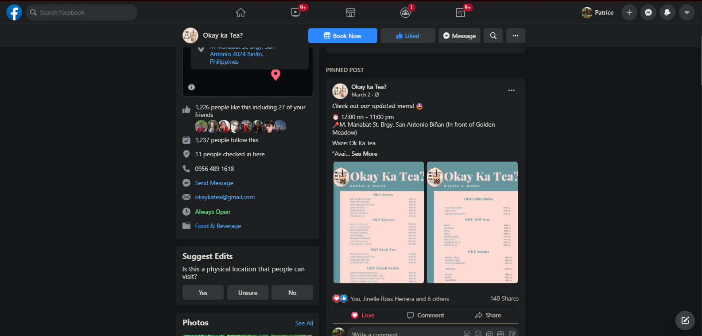
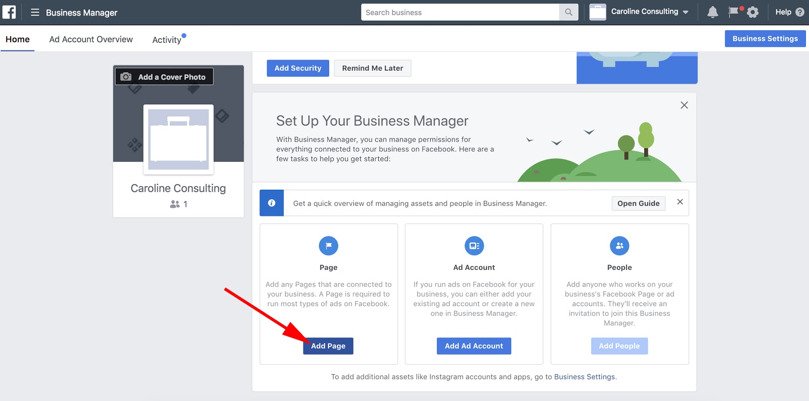
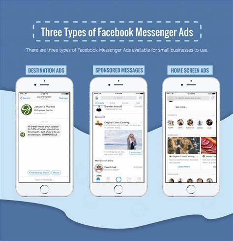

Facebook is one of the most popular social media platforms nowadays. It was founded by Mark Zuckerberg together with his schoolmates at Harvard University. As of now, it is one of the leading platforms in the field of business. The last report as of January 2021 states that the number of worldwide users is whooping at 2.8 billion. On Facebook, you can easily reach a massive number of potential customers for your business.
There are a lot of features on Facebook that you can use to advertise your business. You can optimize these features to help your business grow in the online world. It can enhance your sales, reach a larger audience, and showcase the quality and personality of your brand.
Business Features of Facebook
Features Definition Example Facebook Business Page This Facebook feature lets entrepreneurs create a page solely promoting their business in the online world. You can also invite your friends to like the page you have produced and spread the word. 
Facebook Ads It has algorithms that can detect your search history in your browser. Afterward, the algorithm will add relevant ads to your Facebook experience for you to see other options than what you have searched in your browser.  Facebook Marketplace This feature assists all the entrepreneurs to sell, buy, and trade products from other entrepreneurs. Anyone with a Facebook account can search for the items they want to purchase and instantly receive notifications from the seller or a buyer that you are communicating. Aside from the Facebook business page, you can post all your products in the marketplace, and you can directly link your customers to your page once they viewed your product in the Facebook marketplace. 
Facebook Posts You can posts public for your friends to share your posts and help you spread your business. You can post using your personal Facebook account or from your business page. Create engaging posts with images and videos to attract customers.  Facebook Business Manager A Facebook feature lets you manage all your advertising activity on Facebook and separate it from your personal account. Aside from the fact that it lets you focus on your business activities, it shows a detailed report of the Facebook ads.  Facebook Messenger Messenger can display ads and be a way of communicating with your potential customers. You can exchange updates, details of your products or transactions, and other information with your customers easily. Some Facebook Business Pages have an automated chat box that appears once you visit a page. 
Another thing about Facebook is that it has data analytics tools you can use for your advertising strategies. It is important because it tracks and measures the results of your advertisements and helps you improve your marketing strategies. With the valuable information you can get from here, you can achieve your business goals and improves your business growth. Here are the two types of data analytics tools in Facebook:
- Facebook Page Insights - This tool will help you improve your content to get better results. You can track the strategies that work and determine how your audience interacts with your content.
- Facebook Audience Insights - The information you will get here will help you to know your target audience better. You'll be able to create advertisements that will attract more customers and contents relevant to them.
Indeed, Facebook can be one of the social media platforms you can use for your business to grow. It can reach a large audience, have a variety of features you can optimize, and helps you improve marketing strategies based on the results given to you using its data analytics tools.